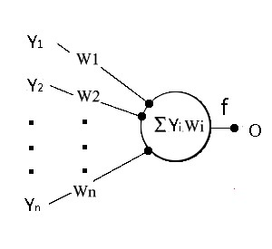
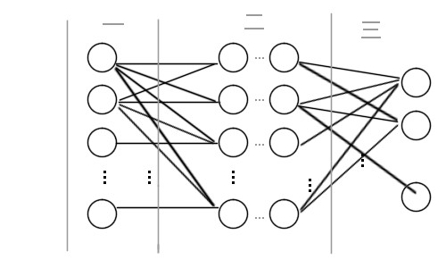
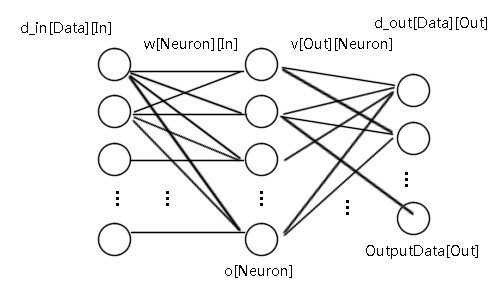
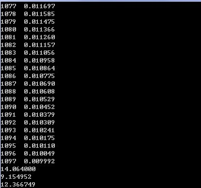

BP神经网络
Clément édite à 20.5.2016, vient de "编程 De blog"
摘自编程De博客：http:\/\/www.cnblogs.com\/jzhlin\/archive\/2012\/07\/28\/bp.html
基本模型
BP 神经网络中的 BP 为 Back Propagation 的简写，最早它是由Rumelhart、McCelland等科学家于 1986 年提出来的，Rumelhart 并在Nature 上发表了一篇非常著名的文章 《Learning representations by back-propagating errors》 。随着时代的迁移，BP神经网络理论不断的得到改进、更新，现在无疑已成为了应用最为广泛的神经网络模型之一。让我们一起来探索下 BP神经网络最初的 基本模型和概念！
从神经网络的生物模型说起
我们知道人大脑信息的传递、对外界刺激产生反应都由神经元控制的，人脑就是由上百亿个的这样神经元构成。这些神经元之间并不孤立而且联系很密切，每个神经元平均与几千个神经元相连接，因此构成了人脑的神经网络。刺激在神经网络中的传播是遵循一定的规则的，一个神经元并非每次接到其他神经传递过来的刺激都产生反应。它首先会将与其相邻的神经元传来的刺激进行积累，到一定的时候产生自己的刺激将其传递给一些与它相邻的神经元。这样工作的百亿个的神经元构成了人脑对外界进行的反应。而人脑对外界刺激的学习的机制就是通过调节这些神经元之间联系以及其强度。当然，实际上以上说的是对人脑真正神经工作的一种简化的生物模型，利用这种简化的生物模型可以将它推广至机器学习中来，并把它描述成人工神经网络。BP神经网络就是其中的一种，来看看具体对神经元的分析。

图1 神经网络中神经元示意图
神经元的积累的刺激是由其他神经元传递过来的刺激量和对应的权重之和。用表示这种积累，表示某个神经元传递过来的刺激量， 表示链接某个神经元刺激的权重，得到公式：
而当 完成积累后，完成积累的神经元本身对周围的一些神经元传播刺激，将其表示为,得到：神经元根据积累后的结果进行处理后，对外传递刺激。用f函数映射来表示这种处理，将它称之为激活函数。
BP神经网络的构成
分析完单个的神经元后，再来看看它们组成网络后的情形，用图形来说明是最直观的方法，如图2所示：

图2 BP神经网络示意图 第一区域的来说，它们相当于外界的刺激，是刺激的来源并且将刺激传递给神经元，因此把第一区域命名为输入层。第二区域，表示神经元相互之间传递刺激相当于人脑里面，因此把第二区命名为隐藏层。第三区域，表示神经元经过多层次相互传递后对外界的反应，因此把第三区域命名为输出层。 简单的描述就是，输入层将刺激传递给隐藏层，隐藏层通过神经元之间联系的强度（权重）和传递规则（激 活函数）将刺激传到输出层，输出层整理隐藏层处理后的刺激产生最终结果。若有正确的结果，那么将正确的结果和产生的结果进行比较，得到误差，再逆推对神经网中的链接权重进行反馈修正，从而来完成学习的过程。这就是BP神经网的反馈机制，也正是BP（Back Propagation）名字的来源：运用向后反馈的学习机制，来修正神经网中的权重，最终达到输出正确结果的目的！
BP神经网络的数学推导
从数学上对BP神经网络模型进行分析，本文第一部分神经网的生物模型中可以得到关于BP神经网络的第一个公式(1)：
对于神经元本身的输出的激活函数，一般来说选取 Sigmoid 函数，那么可以得到第二个公式（2）：
通过以上两个公式，可以分析出来BP神经网络中输出结果的计算过程。每个神经元收到刺激然后加权积累（权重）完成后产生，再通过激活函数产生刺激，向下一层与它相连的神经元传递，依次类推最终输出结果。 我们再来分析如何利用向后反馈机制来修正神经元权重，这一部分数学推导需要运用到多元微分的数学内容。要修正 就需要得到误差量。具体来看，首先用 来表示真实的正确结果，并且设误差为E，那么对应的就是E对于的微分增量，即减去后就能得到正确值，得到公式（3）：
然后，明确目标，需要知道的是对于权重 的误差量是多少，也就是的值。而由公式（1）中知道 与 相关， 那么可以推导出公式（4）：然后，明确目标，需要知道的是对于权重 的误差量是多少，也就是的值。而由公式（1）中知道 与 相关， 那么可以推导出公式（4）：
需要求得 的误差量，转换为需要求 的值了。它的推导如下：
所以最终得到的误差量的值为：
以上公式需要注意下标：最后一个是 ，前面的都是 。推到这里可以算是完成了运用神经网络的输出值 和正确值 对最后一层隐藏层 的修正，那么对其他隐藏层呢？接着往下看。 上面的推导过程由公式（3）开始，如果我们知道（注意是 ，公式（3）中是 ），就可以同理推导求出其对应其他隐藏层需要修正的权重值误差量了。推导如下：
这样所有的误差量的都可以同理 推导完成！ 最后一步修正 ，就是加上下面变量了，设置一个l（0 到 1 之间）学习率。
C语言实现
在上文中，介绍了BP神经网络的基本模型、模型中的一些术语并对模型进行了数学上的分析，对它的原理有了初步的认识。那么如何用程序语言来具体的实现它，将是我们下一步需要讨论的问题。本文选取的是C语言来实现一个简单的单隐藏层的BP神经网络，因此对于其他C类语言（C#、JAVA等）只需对本文中的代码稍作修改即可移植。
一些数据的定义
首先，我们介绍些下文中描述的程序里面的一些重要数据的定义。
#define Data 820
#define In 2
#define Out 1
#define Neuron 45
#define TrainC 5500
Data用来表示已经知道的数据样本的数量，也就是训练样本的数量。In表示对于每个样本有多少个输入变量; Out表示对于每个样本有多少个输出变量。Neuron 表示神经元的数量，TrainC来表示训练的次数。再来我们看对神经网络描述的数据定义，来看下面这张图里面的数据类型都是double型。  d_in[Data][In] 存储 Data 个样本，每个样本的 In 个输入。d_out[Data][Out]存储 Data个样本，每个样本的Out个输出。我们用邻接表法来表示 图1 中的网络，w[Neuron][In]表示某个输入对某个神经元的权重，v[Out][Neuron] 来表示某个神经元对某个输出的权重；与之对应的保存它们两个修正量的数组 dw[Neuron][In] 和 dv[Out][Neuron]。数组 o[Neuron] 记录的是神经元通过激活函数对外的输出，OutputData[Out]存储BP神经网络的输出。
程序的执行过程
在这里，先不考虑具体函数的执行细节，从大体上来介绍程序的执行过程。用伪代码来表示，具体的内容后面一步步介绍，如下：
主函数main{
读取样本数据 readData()；
初始化BP神经网络
initBPNework()
{
包括数据的归一，神经元的初始化 w[Neuron][In]、v[Out][Neuron]等；
}
BP神经网络训练 trainNetwork(){
do{
for（i 小于 样本容量 Data）{
计算按照第 i 个样本输入，产生的BP神经网络的输出 computO(i)；
累记误差精度；
反馈调节BP神经网络中的神经元，完成第 i 个样本的学习 backUpdate(i)；
}
}while（达到训练次数 或者 符合误差精度）；
}
存储训练好的神经元信息 writeNeuron()；
用一些数据来测试，训练出来的BP神经网络的结果；
return 0；
}
以上是处理的流程，对于读取数据、保存数据之类的处理本文将略去这方面内容，突出主干部分。
初始化BP神经网络
初始化主要是涉及两个方面的功能，一方面是对读取的训练样本数据进行归一化处理，归一化处理就是指的就是将数据转换成0~1之间。在BP神经网络理论里面，并没有对这个进行要求，不过实际实践过程中，归一化处理是不可或缺的。因为理论模型没考虑到，BP神经网络收敛的速率问题，一般来说神经元的输出对于0~1之间的数据非常敏感，归一化能够显著提高训练效率。可以用以下公式来对其进行归一化，其中 加个常数A 是为了防止出现 0 的情况（0不能为分母）。 y=(x-MinValue+A)\/(MaxValue-MinValue+A) 另一方面，就是对神经元的权重进行初始化了，数据归一到了（0~1）之间，那么权重初始化为（-1~1）之间的数据，另外对修正量赋值为0。实现参考代码如下：
void initBPNework(){
int i,j;
/*
找到数据最小、最大值
*/
for(i=0; i<In; i++){
Minin[i]=Maxin[i]=d_in[0][i];
for(j=0; j<Data; j++)
{
Maxin[i]=Maxin[i]>d_in[j][i]?Maxin[i]:d_in[j][i];
Minin[i]=Minin[i]<d_in[j][i]?Minin[i]:d_in[j][i];
}
}
for(i=0; i<Out; i++){
Minout[i]=Maxout[i]=d_out[0][i];
for(j=0; j<Data; j++)
{
Maxout[i]=Maxout[i]>d_out[j][i]?Maxout[i]:d_out[j][i];
Minout[i]=Minout[i]<d_out[j][i]?Minout[i]:d_out[j][i];
}
}
/*
归一化处理
*/
for (i = 0; i < In; i++)
for(j = 0; j < Data; j++)
d_in[j][i]=(d_in[j][i]-Minin[i]+1)/(Maxin[i]-Minin[i]+1);
for (i = 0; i < Out; i++)
for(j = 0; j < Data; j++)
d_out[j][i]=(d_out[j][i]-Minout[i]+1)/(Maxout[i]-Minout[i]+1);
/*
初始化神经元
*/
for (i = 0; i < Neuron; ++i)
for (j = 0; j < In; ++j){
w[i][j]=(rand()*2.0/RAND_MAX-1)/2;
dw[i][j]=0;
}
for (i = 0; i < Neuron; ++i)
for (j = 0; j < Out; ++j){
v[j][i]=(rand()*2.0/RAND_MAX-1)/2;
dv[j][i]=0;
}
}
BP神经网络训练
这部分应当说是整个BP神经网络形成的引擎，驱动着样本训练过程的执行。由BP神经网络的基本模型知道，反馈学习机制包括两大部分，一是BP神经网络产生预测的结果，二是通过预测的结果和样本的准确结果进行比对，然后对神经元进行误差量的修正。因此，我们用两个函数来表示这样的两个过程，训练过程中还对平均误差 e 进行监控，如果达到了设定的精度即可完成训练。由于不一定能够到达预期设定的精度要求，我们添加一个训练次数的参数，如果次数达到也退出训练。实现参考代码如下：
void trainNetwork(){
int i,c=0;
do{
e=0;
for (i = 0; i < Data; ++i){
computO(i);
e+=fabs((OutputData[0]-d_out[i][0])/d_out[i][0]);
backUpdate(i);
}
//printf("%d %lf\n",c,e/Data);
c++;
}while(c<TrainC && e/Data>0.01);
其中的函数，computO(i)（O是output缩写）计算BP神经网络预测第i个样本的输出也就是第一个过程。backUpdate(i)是根据预测的第i个样本输出对神经网络的权重进行更新，e用来监控误差。 BP神经网络输出 函数computO(i)负责的是通过BP神经网络的机制对样本i的输入，预测其输出。回想BP神经网络的基本模型（详情见基本模型）对应的公式（1）还有激活函数对应的公式（2）：
在前篇设计的BP神经网络中，输入层与隐藏层权重对应的数据结构是w[Neuron][In]，隐藏层与输出层权重对应的数据结构是v[Out][Neuron]，并且数组 o[Neuron] 记录的是神经元通过激活函数对外的输出，BP神经网络预测的样本结果保存在OutputData[Out]中。由此，就可以得到以下实现的参考代码：
void computO(int var){
int i,j;
double sum,y;
/*
神经元输出
*/
for (i = 0; i < Neuron; ++i){
sum=0;
for (j = 0; j < In; ++j)
sum+=w[i][j]*d_in[var][j];
o[i]=1/(1+exp(-1*sum));
}
/* 隐藏层到输出层输出 */
for (i = 0; i < Out; ++i){
sum=0;
for (j = 0; j < Neuron; ++j)
sum+=v[i][j]*o[j];
OutputData[i]=sum;
}
BP神经网络的反馈学习
函数backUpdate(i)负责的是将预测输出的结果与样本真实的结果进行比对，然后对神经网络中涉及到的权重进行修正，也这是BP神经网络实现的++关键所在++。如何求到对于w[Neuron][In]和v[Out][Neuron] 进行修正的误差量便是关键所在！误差修正量的求法在基本模型一文中数学分析部分有解答，++具体问题具体分析++，落实到我们设计的这个BP神经网络上来说，需要得到的是对w[Neuron][In] 和 v[Out][Neuron] 两个数据进行修正误差，误差量用数据结构 dw[Neuron][In] 和 dv[Out][Neuron] 来进行存储。那么来分析下这两个修正误差量是什么样的？推导的思路与基本模型中推导误差量的一致，这里仅列出对具体对于我们设计的BP神经网络中的数学推导过程：
到这里完成了数学推导，实现的代码就很容易写了。在具体实现对误差修改中，我们再加上学习率，并且对先前学习到的修正误差量进行继承，直白的说就是都乘上一个0到1之间的数，具体的见如下实现参考代码：
#define A 0.2
#define B 0.4
#define a 0.2
#define b 0.3
void backUpdate(int var)
{
int i,j;
double t;
for (i = 0; i < Neuron; ++i)
{
t=0;
for (j = 0; j < Out; ++j){
t+=(OutputData[j]-d_out[var][j])*v[j][i];
dv[j][i]=A*dv[j][i]+B*(OutputData[j]-d_out[var][j])*o[i];
v[j][i]-=dv[j][i];
}
for (j = 0; j < In; ++j){
dw[i][j]=a*dw[i][j]+b*t*o[i]*(1-o[i]);
w[i][j]-=dw[i][j];
}
}
}
好了，至此BP神经网络的C语言实现就全部完成了。最后，我们可以测试下BP神经网络的运行。我这里是这样给出数据的，两个输入a、b（10以内的数），一个输出 c，c=a+b。换句话说就是教BP神经网络加法运算。在 45个神经元，820个训练样例，样本平均误差小于0.01时完成训练（学习率等见参考代码）的条件下，最后预测 (6,8)，(2.1,7),(4.3,8）实际输出结果如下： 